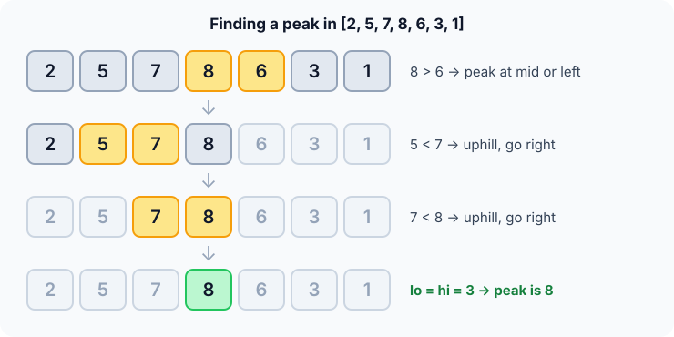

Prerequisites
- Binary search: peak finding uses the same halving loop.
- Comparing an element with its neighbour.
- The idea of a "local" maximum versus the "global" maximum.
The analogy
Everyday analogy
You're hiking in thick fog and can only see one step ahead. Rule: always step uphill. You're guaranteed to reach a summit, though maybe not the highest mountain.
Peak finding does this on an array. At the middle, it checks which way is uphill and throws away the other half, because a summit must exist on the uphill side.
How it works
Data requirement: none. Any array works, sorted or not. Treat positions outside the array as $-\infty$.
Start with one search by hand
Take [2, 5, 7, 8, 6, 3, 1], indices 0 to 6. At each step compare a[mid] with a[mid + 1]. Guess first, then open "Check".
Example: predict before you read
Step 1. mid = 3: compare 8 with 6. Predict: which side keeps a peak?
Check
8 > 6, so it's downhill to the right. A peak is at 3 or to its left: keep 0..3.
Step 2. Cover the next line and guess: mid = 1, compare 5 with 7. Where now?
Check
5 < 7 is uphill to the right, so keep 2..3.
Step 3. mid = 2, compare 7 with 8. Predict where the range ends.
Check
Uphill again, so keep 3..3. One element is left: index 3, value 8, is a peak. 3 comparisons.

6 go left, 5 < 7 go right, 7 < 8 go right, peak 8 at index 3." width="740" height="400">Quick recall: Before reading further, cover the text above and say out loud: if a[mid] < a[mid + 1], why must a peak exist on the right?
Check your answer
Keep walking right from mid + 1. Either the values eventually stop rising, which is a peak, or they rise to the end, and the last element is a peak.
Finish the picture
Peaks don't have to be the maximum. Try [1, 3, 2, 4, 6, 5], which has two peaks, 3 and 6.
- Step 1. mid = 2: compare 2 with 4. Predict the direction.
Check
2 < 4 is uphill to the right, so keep 3..5.
- Step 2. mid = 4: compare 6 with 5. Predict the peak returned.
Check
Downhill, so keep 3..4; then mid = 3, 4 < 6, keep 4..4. It returns 6, at index 4. The peak 3 at index 1 is never seen, and that's fine.
Quick recall: Without scrolling up, say out loud: why is returning 6 and ignoring 3 still a correct answer?
Check your answer
The task is to find a peak, any element at least as big as its neighbours. Both qualify.
The rule in plain words
Look at the middle and its right neighbour. If the neighbour is bigger, the slope goes up to the right: keep the right part. Otherwise keep the middle and the left part.
When one element is left, it is a peak.
Quick recall: Before you read the code, write the three steps of one round in your own words. Then check below.
Check your answer
1. Compare the middle with the next element. 2. If the next one is bigger, move to the right part. 3. Otherwise keep the middle and everything to its left.
The code
Read this code after you have done one search by hand. It will make more sense.
int find_peak(const int a[], int n) { /* returns the index of a peak */
int lo = 0, hi = n - 1;
while (lo < hi) { /* more than one candidate */
int mid = lo + (hi - lo) / 2; /* mid < hi, so mid + 1 is valid */
if (a[mid] < a[mid + 1]) lo = mid + 1; /* uphill: peak on the right */
else hi = mid; /* downhill: peak at mid or left */
}
return lo;
}Definition
What you just did, in one line: a peak is an element with $a_{i-1} \le a_i \ge a_{i+1}$, and peak finding locates one by always keeping the half on the uphill side of the middle.
flowchart TD
A["lo = 0, hi = n - 1"] --> B{"lo < hi ?"}
B -->|no| C["Return lo: it is a peak"]
B -->|yes| D["mid = middle of lo..hi"]
D --> E{"a[mid] < a[mid+1] ?"}
E -->|"yes: uphill"| F["lo = mid + 1"]
E -->|"no: downhill"| G["hi = mid"]
F --> B
G --> B
[2, 5, 7, 8, 6, 3, 1], which arrow do you take first? (Answer: "no: downhill", since 8 > 6.)How fast is it?
Quick recall: Before looking at the formula, predict: how many elements does a simple left-to-right scan check in the worst case?
Check your answer
All $n$, if the array keeps rising and the peak is the last element.
Each round halves the candidate range, and the loop runs until one element is left:
$$\lceil \log_2 n \rceil \text{ comparisons} \;=\; O(\log n), \qquad \text{versus } O(n) \text{ for a linear scan.}$$For our 7 elements, that's $\lceil \log_2 7 \rceil = 3$, exactly what we used.
| Best | Average | Worst | Extra space | Data requirement |
|---|---|---|---|---|
| $O(\log n)$ | $O(\log n)$ | $O(\log n)$ | $O(1)$ | None (any array) |
Warning
This finds a peak, not the maximum. Finding the global maximum of an unsorted array still needs $O(n)$, because the biggest value could be anywhere.
Exam tip
Be ready to justify "a peak exists on the uphill side": follow the rising values; they either turn down (a peak) or reach the edge, which is a peak because outside counts as $-\infty$.
Common mistakes
- Writing
hi = mid - 1on the downhill branch, which can throw away the peak atmiditself. - Using
lo <= hi: withhi = midthe range may stop shrinking, so the loop never ends. - Thinking the answer is the largest element. It's only guaranteed to beat its neighbours.
Try it yourself
Exercise 1 (warm-up)
Find a peak in [1, 2, 3, 4, 5] with the algorithm. Which index is returned?
Hint
Every comparison is uphill.
Answer
Index 4, value 5. The last element is a peak because outside the array counts as $-\infty$.
Exercise 2 (a bit harder)
Run the algorithm on [9, 1, 2, 3, 4, 5, 0]. Which peak does it return, and is it the maximum? Write your answer down before you open it.
Show answer
mid = 3 (3 < 4) → keep 4..6; mid = 5 (5 > 0) → keep 4..5; mid = 4 (4 < 5) → keep 5..5. It returns 5 at index 5. It's a valid peak but not the maximum, which is 9 at index 0.
Did you know?
Did you know?
MIT's famous 6.006 course opened its first lecture with peak finding. It shows in five minutes how a smarter idea turns $O(n)$ into $O(\log n)$.
The same "follow the slope" idea is the heart of hill climbing and gradient methods used in machine learning, which also find local, not always global, best points.
Key points to remember
If you remember one thing from each line, remember the because.
- A peak always exists because the maximum element is one, and rising values must end somewhere.
- The uphill half must contain a peak because walking up it either turns down or reaches the edge.
- It is $O(\log n)$ because each comparison halves the candidate range.
- It may miss the maximum because it only needs a local peak and ignores the other half.
- Extra space is $O(1)$ because it only keeps
lo,hiandmid.
Self-check questions
Answer these in order, out loud. They follow the page, so your answers become the script of your video.
- How is peak finding like hiking in fog?
Sample answer
You can only see the next step, so you always step uphill. That guarantees you reach some summit, though not necessarily the highest one.
- Walk through peak finding on [2, 5, 7, 8, 6, 3, 1].
Sample answer
8 vs 6 is downhill, so keep 0..3; 5 vs 7 is uphill, so keep 2..3; 7 vs 8 is uphill, so keep 3..3. The peak is 8 at index 3.
- Why does the code set
hi = midand nothi = mid - 1on the downhill branch?A good answer says what
midmight be.Sample answer
When
a[mid] ≥ a[mid+1],miditself might be the peak. Excluding it could throw away the only peak in the range. - So what is peak finding, in one sentence?
Sample answer
It finds an element at least as big as its neighbours by repeatedly keeping the half on the uphill side of the middle.
- Why must the uphill side contain a peak?
A good answer follows the rising values to their end.
Sample answer
Walk uphill from
mid + 1. Either the values stop rising at some point, which is a peak, or they keep rising to the edge, and the edge element is a peak because outside is $-\infty$. - What are its time and space complexity?
Sample answer
$O(\log n)$ comparisons in every case, since the loop always narrows to one element, and $O(1)$ extra space.
- Why can't the same trick find the maximum in $O(\log n)$?
Sample answer
The maximum could be in the half we throw away, as in [9, 1, 2, 3, 4, 5, 0]. Only a local peak is guaranteed on the uphill side, so the maximum still needs $O(n)$.
- If you had to teach this to a friend in 2 minutes, what would you leave out, and why?
Sample answer
I'd leave out the $-\infty$ boundary convention and the exact $\lceil \log_2 n \rceil$ count. I'd keep the fog analogy, the walk on the example, and "go uphill, halve each time, finds a peak, not the max".
External resources
- MIT OCW 6.006 Lecture 1: Algorithmic thinking, peak finding: the original lecture with notes.
- GeeksforGeeks: Find a peak element: linear and binary search versions with code.
- LeetCode 162: Find Peak Element: practise the exact problem.
Videos
- YouTube search: MIT 6.006 Lecture 1, peak finding: the full MIT lecture.